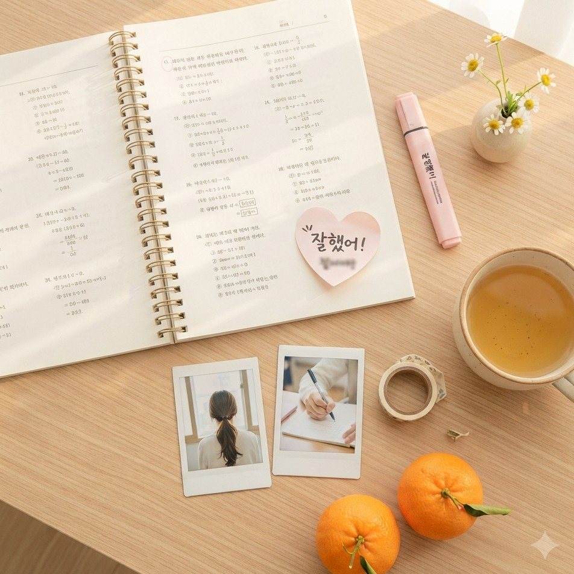

나만의 공부 비법을 찾아 주는 곳.
스스로 공부하는 습관까지 함께 만들어요.
"중학교 수학은 반복이고,
고등학교 수학은 연결이에요."
* 사진은 시안용 예시예요. 실제 원장님 사진으로 바꿔 드려요.
빨리, 많이가 아니라 한 계단씩 확실하게. 학년마다 공부의 핵심이 달라요.
공식을 외우기 전에, 왜 그런지 내 말로 설명해 봐요.
유형별로 세 번 풀고 체크. 실수가 사라질 때까지.
개념끼리 이어서, 처음 보는 문제도 풀어 내요.
틀린 문제는 다시 풀어 맞힐 때까지가 공부예요.
학원에 있을 때만 하는 공부는 오래가지 않아요. 도담은 아이가 직접 계획하고, 체크하고, 돌아보게 해요.
수업 시작 전, 오늘 할 분량을 스스로 적고 시작해요.
틀린 이유를 한 줄로 적고, 다음 수업에 다시 풀어요.
오늘 배운 것과 숙제를 짧게 정리해 보내 드려요.
학년과 수준에 맞춰 반을 나누고, 같은 반 안에서도 진도는 한 명씩 챙겨요.
| 과정 | 대상 | 수업 | 시험 기간 |
|---|---|---|---|
| 초등반 | 초4 ~ 초6 | 주 3회 | 단원평가 대비 |
| 중등반 | 중1 ~ 중3 | 주 3회 | 학교별 직전 보강 |
| 고등반 | 고1 ~ 고2 | 주 3회 | 내신 집중 보강 |
| 심화반 | 상위권 희망자 | 상담 후 결정 | 개별 안내 |
* 시간표·교습비는 예시예요. 교육청에 등록된 금액으로 상담 때 투명하게 안내해 드려요.

지금 학년과 학교, 고민을 말씀해 주시면 아이에게 맞는 시작점을 찾아 드려요.
010-1234-5678